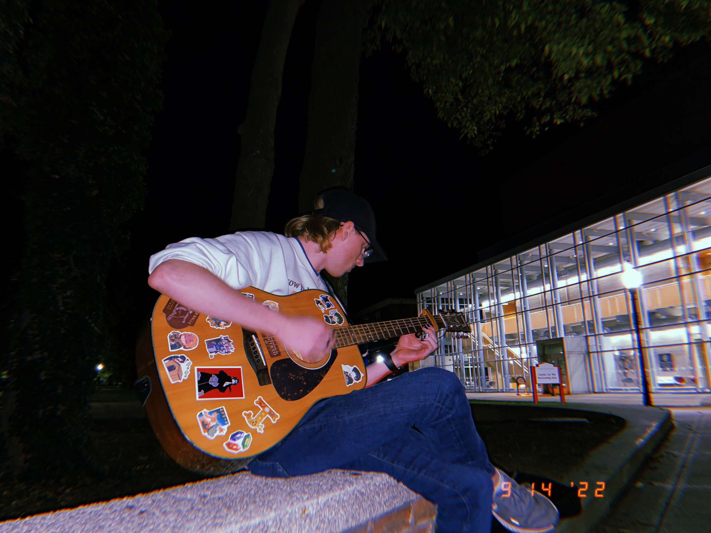
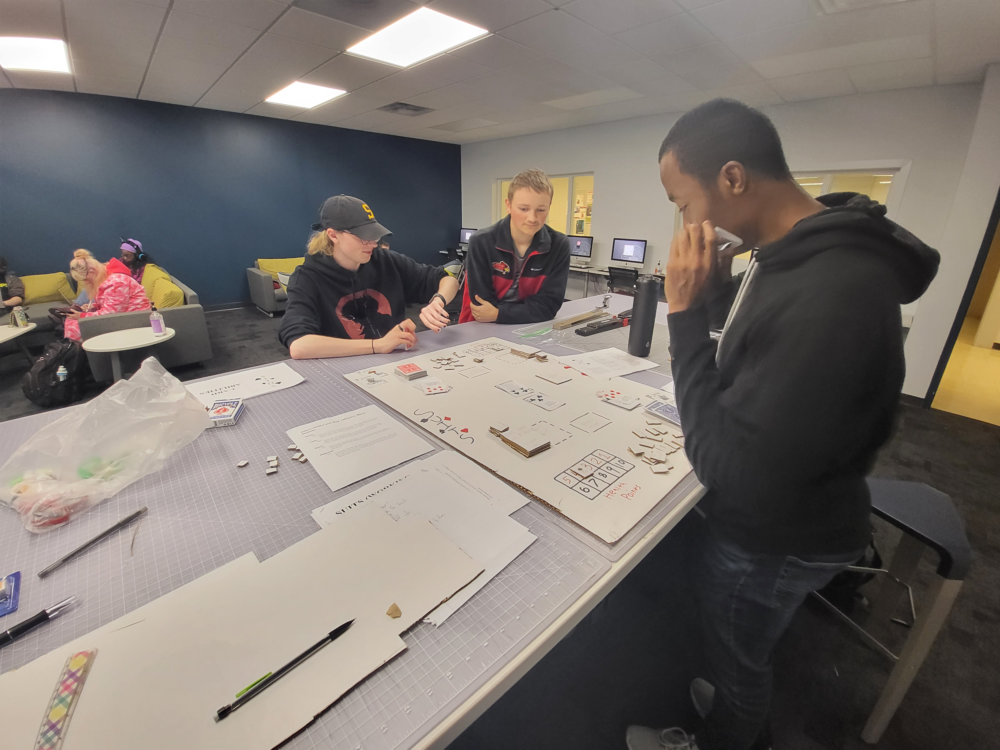

Welcome!
Welcome to my portfolio website! My name is Blake, and I am a 20 year old Game Design student at Illinois State University. Beyond game design, I love playing music and experimenting with sound. I’ve even written a few songs for my band, Appalachia! My goal with this website is to show off any projects I’ve worked on during my college career, whether they are game design related or music related. They’ll be organized into two separate pages on the site, along with a section all about yours truly. If you’re interested in contacting me, a contact form will be available on the About Me page. Enjoy your stay, and don’t forget to check out my social media links at the bottom of each page!
About Me
{kind=link}
The all important question: who am I? My name is Blake, and I am a Game Design student at Illinois State University, projected to graduate in 2025. I’m super interested in game design and music, but also finding interesting ways to use music in video games. Some of my inspirations include games like Crypt of the NecroDancer, the Legend of Zelda series, and bands like Nirvana, Modest Mouse, and Men I Trust. Following my love for the art of video games, I enjoy streaming different games on my Twitch channel every once in a while. You can find the link to my channel at the bottom of every page, but just in case, you can find me under the name “Barychu.” If you’re interested in learning even more about me, you can click the button below or the About Me button at the top of the page to really deep dive into my mind.
Game Design
{kind=link}
Game Design has been a passion for me for a really long time, all the way back when I was just a young kid booting up his DS to play New Super Mario Bros. I actually originally came to college to study Actuarial Science, but a week before classes started I decided to switch to my school’s Game Design program because I knew it was something I wanted to spend the rest of my life doing, and something I would enjoy the rest of my life doing. Without spoiling, I have a LOT of inspirations for future games I want to create, particularly from nostalgic Nintendo Wii games I played as a kid. I also want to find creative and innovative ways to use music in video games.
My Music

While video games have been an integral part of my life for an extremely large portion, music has been there even longer. I’ve gone through lots of different musical phases, and even now I jump around genres extremely often. As I grew up, it became a form of expression for me, leading to me picking up the trumpet to play in middle school and high school. From there, I started learning bass guitar, clarinet, ukulele, and more. The instrument that has stuck with me for the longest period though is acoustic guitar. I’ve been expanding my repertoire for a while now, and a few months ago actually decided to start a little mini band with my friends, named Appalachia! While we haven’t released anything yet, we have a LOT of demos and little instrumentals we’ve recorded in our freetime, along with countless titles for songs that will probably never be made.